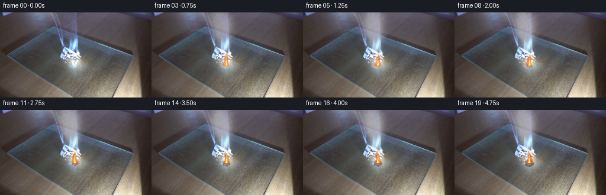
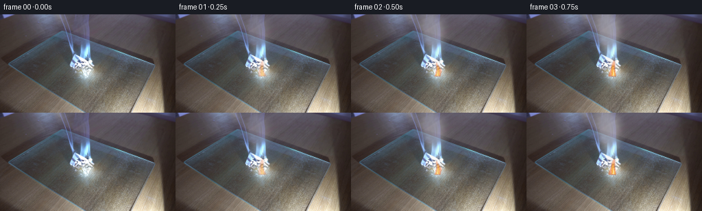

CODING AGENTS AS PIXEL WORLD MODELS
traex/GPT-5.6-Sol · 0141
点击播放 · 原生 RGB 像素
逐轮保存的候选
回放视频、检查图与代码变化。
每份候选均可单独播放。实际图片检查记录在下方工具轨迹中。
候选 01播放与检查图
点击播放 · 原生 RGB 像素


展开代码变化
--- 上一保存版本
+++ 本次保存版本
@@ -0,0 +1,155 @@
+from pathlib import Path
+import numpy as np
+import cv2
+from PIL import Image
+import artifact_io
+
+# Fixed, analytically composited continuation of the supplied camera frame.
+ROOT = Path(__file__).resolve().parent
+BASE = np.asarray(Image.open(ROOT / "first_frame.png").convert("RGB"), dtype=np.uint8)
+H, W = BASE.shape[:2]
+Y, X = np.mgrid[0:H, 0:W].astype(np.float32)
+
+
+def over(im, color, alpha):
+ """Alpha composite a constant RGB colour over a float RGB image."""
+ a = np.clip(alpha, 0.0, 1.0)[..., None]
+ return im * (1.0 - a) + np.asarray(color, np.float32) * a
+
+
+def smoke_density(seconds):
+ """A rising train of expanding, translucent white smoke eddies."""
+ d = np.zeros((H, W), np.float32)
+ # Emissions which predate frame zero give the fire a continuous plume. The
+ # compositing strength is eased in separately to keep frame 0 untouched.
+ births = np.arange(-3.55, seconds + 0.001, 0.215, dtype=np.float32)
+ for j, birth in enumerate(births):
+ age = float(seconds - birth)
+ if age < 0.0 or age > 4.8:
+ continue
+ # Stable pseudo-random parameters (no external assets or simulation).
+ r1 = np.sin(j * 12.9898 + 0.7) * 43758.5453
+ r1 = r1 - np.floor(r1)
+ r2 = np.sin(j * 7.1231 + 4.1) * 24634.6345
+ r2 = r2 - np.floor(r2)
+ r3 = np.sin(j * 3.7789 + 2.2) * 19642.3491
+ r3 = r3 - np.floor(r3)
+
+ # Smoke leaves the glowing fold at (126,72), rises, and drifts left.
+ cy = 72.0 - (13.0 + 2.4*r1) * age - 0.45 * age * age
+ cx = 126.0 - (2.0 + 1.8*r2) * age
+ cx += (2.0 + age*0.55) * np.sin(age*2.15 + j*1.31)
+ if cy < -18:
+ continue
+ rx = 2.3 + age*(2.15 + 0.5*r2)
+ ry = 2.9 + age*(2.7 + 0.45*r3)
+ life = np.clip(age / 0.18, 0, 1) * np.clip((4.65-age)/0.9, 0, 1)
+
+ # Each puff has two lobes, making a curled rather than perfectly oval
+ # silhouette. A small negative pocket suggests turbulent roll-up.
+ g = np.exp(-0.5*(((X-cx)/rx)**2 + ((Y-cy)/ry)**2))
+ sx = cx + (r1-.5)*rx*1.15
+ sy = cy + (r2-.5)*ry*.60
+ g2 = np.exp(-0.5*(((X-sx)/(rx*.63))**2 + ((Y-sy)/(ry*.70))**2))
+ hx = cx - (r2-.5)*rx*.7
+ hy = cy - ry*.15
+ hole = np.exp(-0.5*(((X-hx)/(rx*.33+0.2))**2 + ((Y-hy)/(ry*.30+0.2))**2))
+ d += life * (0.56 + .18*r3) * np.maximum(g + .40*g2 - .16*hole, 0)
+
+ # Wispy neck between the flame and detached puffs.
+ neck_x = 126.0 + 1.5*np.sin((72.0-Y)*.35 + seconds*2.0)
+ neck = np.exp(-0.5*((X-neck_x)/1.75)**2) * np.exp(-0.5*((Y-66.0)/8.5)**2)
+ neck *= (Y < 74) & (Y > 48)
+ d += .27*neck
+
+ # Mild coherent variation breaks up Gaussian smoothness at this resolution.
+ texture = 0.90 + 0.10*np.sin(X*.47 + Y*.21 + seconds*1.8) * np.sin(Y*.61-X*.15)
+ d = np.maximum(d*texture, 0)
+ d = cv2.GaussianBlur(d, (0, 0), .55)
+ return d
+
+
+def fire_masks(seconds):
+ """Flickering flame masks rooted at the upper crease of the paper."""
+ flick = np.sin(seconds*8.7) + .42*np.sin(seconds*17.1 + 1.1)
+ base_y = 89.0
+ tip_y = 68.5 - 2.1*flick
+ q = np.clip((Y-tip_y)/(base_y-tip_y), 0, 1)
+ center = 126.0 + 1.35*np.sin(seconds*10.3 + q*4.0) + .45*np.sin(seconds*21.0 + q*7.0)
+ width = .45 + 4.65*(q**.70) * (1.0 - .13*np.sin(q*8.0 + seconds*13.0))
+ signed = width - np.abs(X-center)
+ outer = np.clip(signed/1.15 + .48, 0, 1) * (Y >= tip_y-1) * (Y <= base_y+1)
+ outer = cv2.GaussianBlur(outer.astype(np.float32), (0,0), .48)
+
+ # Yellow and near-white cores are shorter and follow their own wobble.
+ inner_tip = 74.0 - 1.25*np.sin(seconds*9.1 + .7)
+ qi = np.clip((Y-inner_tip)/(base_y-inner_tip), 0, 1)
+ ci = 126.2 + .75*np.sin(seconds*12.4 + qi*3.6)
+ wi = .25 + 2.55*qi**.72
+ inner = np.clip((wi-np.abs(X-ci))/.8 + .42, 0, 1) * (Y >= inner_tip-.7) * (Y <= base_y)
+ inner = cv2.GaussianBlur(inner.astype(np.float32), (0,0), .38)
+
+ core_tip = 79.5 - .8*np.sin(seconds*11.7)
+ qc = np.clip((Y-core_tip)/(base_y-core_tip), 0, 1)
+ cc = 126.1 + .35*np.sin(seconds*14.5 + qc*4)
+ wc = .2 + 1.35*qc
+ core = np.clip((wc-np.abs(X-cc))/.65 + .35, 0, 1) * (Y >= core_tip) * (Y <= base_y)
+ core = cv2.GaussianBlur(core.astype(np.float32), (0,0), .3)
+ return outer, inner, core
+
+
+def make_frame(index):
+ if index == 0:
+ return BASE.copy()
+ seconds = index / 4.0
+ im = BASE.astype(np.float32)
+ # Smooth first-frame handoff while quickly revealing ongoing combustion.
+ reveal = 1.0 - np.exp(-seconds/0.48)
+
+ # Slowly spreading brown-black scorch in the fold. Irregular boundary and
+ # a narrow ember rim retain the appearance of paper rather than a black disc.
+ growth = min(seconds/4.75, 1.0)
+ dx, dy = X-126.0, Y-90.0
+ ang = np.arctan2(dy, dx)
+ radius = np.sqrt((dx/1.22)**2 + dy**2)
+ edge = 2.1 + 4.3*growth + .55*np.sin(ang*5 + .8) + .3*np.sin(ang*9-seconds)
+ char = np.clip((edge-radius)*1.3, 0, 1)
+ char *= (Y < 97)
+ im = over(im, (47, 33, 25), char*(.20 + .31*growth)*reveal)
+ rim = np.exp(-((radius-edge+.35)/.72)**2) * (Y < 95)
+ im = over(im, (166, 67, 20), rim*.16*growth*reveal)
+
+ # A very restrained warm bounce on the nearby white paper.
+ glow = np.exp(-0.5*(((X-126)/9.0)**2 + ((Y-84)/11.0)**2))
+ im = over(im, (246, 129, 42), glow*.075*reveal*(.78+.22*np.sin(seconds*10.7)))
+
+ outer, inner, core = fire_masks(seconds)
+ im = over(im, (236, 86, 19), outer*.64*reveal)
+ im = over(im, (255, 181, 38), inner*.78*reveal)
+ im = over(im, (255, 244, 180), core*.86*reveal)
+
+ # Smoke is composited after the flame; it is denser and cooler aloft, with
+ # bright milky centers and translucent gray edges.
+ dens = smoke_density(seconds)
+ alpha = (1.0 - np.exp(-dens*.72)) * .53 * reveal
+ shade = np.clip(dens/2.1, 0, 1)
+ smoke_rgb = np.empty((H,W,3), np.float32)
+ smoke_rgb[...,0] = 205 + 30*shade
+ smoke_rgb[...,1] = 209 + 28*shade
+ smoke_rgb[...,2] = 208 + 25*shade
+ a = alpha[...,None]
+ im = im*(1-a) + smoke_rgb*a
+
+ return np.clip(np.rint(im), 0, 255).astype(np.uint8)
+
+
+def main():
+ frames = np.stack([make_frame(i) for i in range(20)], axis=0)
+ # Hard contract check: exact supplied first frame, RGB uint8 dimensions.
+ assert frames.shape == (20, 144, 256, 3) and frames.dtype == np.uint8
+ assert np.array_equal(frames[0], BASE)
+ artifact_io.save(frames, ROOT)
+
+
+if __name__ == "__main__":
+ main()
可观测工具轨迹
实际执行的命令与返回图片。
命令 1exit 0
/bin/bash -lc "cat GENERATION_RULES.md && printf '\\n---PROMPT---\\n' && cat prompt.txt"
命令 2exit 1
/bin/bash -lc "find . -maxdepth 2 -type f -printf '%p\\n' | sort && printf '\\nTOOLS\\n' && which ffmpeg && python - <<'PY'
from PIL import Image
im=Image.open('first_frame.png')
print(im.mode, im.size)
PY"命令 3exit 0
/bin/bash -lc "python - <<'PY'
from PIL import Image
import numpy as np
im=np.array(Image.open('first_frame.png').convert('RGB'))
print(im.shape, im.dtype, im.min(), im.max(), im.mean((0,1)), im.std((0,1)))
# grid regional means/std 8x6
H,W=im.shape[:2]
for gy in range(6):
print('row',gy, [tuple(np.round(im[gy*H//6:(gy+1)*H//6,gx*W//8:(gx+1)*W//8].mean((0,1))).astype(int)) for gx in range(8)])
# extrema chroma / bright/dark bboxes/count
mx=im.max(2); mn=im.min(2); lum=im.mean(2)
for name,m in [('bright',lum>220),('dark',lum<50),('orange',(im[:,:,0]>130)&(im[:,:,0]>im[:,:,1]*1.25)&(im[:,:,1]>im[:,:,2]*1.2)),('white',(mn>180)&(mx-mn<25)),('gray',(mx-mn<15)),('blue',(im[:,:,2]>im[:,:,0]*1.15)&(im[:,:,2]>im[:,:,1]*1.1))]:
ys,xs=np.where(m); print(name,len(xs), (xs.min(),ys.min(),xs.max(),ys.max()) if len(xs) else None, 'cent', (xs.mean(),ys.mean()) if len(xs) else None)
# most common quantized bins
q=(im//16).reshape(-1,3)
u,c=np.unique(q,axis=0,return_counts=True)
for i in np.argsort(c)[-20:][::-1]: print(c[i], tuple(u[i]*16))
PY"命令 4exit 0
/bin/bash -lc "python - <<'PY'
try: import cv2; print('cv2',cv2.__version__)
except Exception as e: print(e)
from PIL import Image
import numpy as np
im=np.array(Image.open('first_frame.png').convert('RGB'))
# 4x4 mean glyph by luma, uppercase chroma categories
chars=' .:-=+*#%@'
for y in range(0,144,4):
s=''
for x in range(0,256,4):
c=im[y:y+4,x:x+4].mean((0,1)); l=c.mean(); d=c.max()-c.min()
ch=chars[min(9,int(l/256*10))]
# chroma special: blue B, warm w, red R, green G if high saturation
if d>22:
if c[2]==c.max(): ch='B' if l>90 else 'b'
elif c[0]==c.max(): ch='W' if l>100 else 'w'
else: ch='G' if l>100 else 'g'
s+=ch
print(s)
PY"命令 5exit 0
/bin/bash -lc "python - <<'PY'
import cv2, numpy as np
from PIL import Image
im=np.array(Image.open('first_frame.png').convert('RGB')); g=cv2.cvtColor(im,cv2.COLOR_RGB2GRAY)
# print contours bright thresholds
for th in [120,140,160,180,200,220]:
m=(g>th).astype(np.uint8)
n,l,st,ce=cv2.connectedComponentsWithStats(m)
print('\\nth',th)
for i in np.argsort(st[1:,4])[-15:][::-1]+1:
x,y,w,h,a=st[i];
if a>=4: print(a,(x,y,w,h),tuple(np.round(ce[i],1)))
# lines
edges=cv2.Canny(g,50,120)
ls=cv2.HoughLinesP(edges,1,np.pi/180,threshold=25,minLineLength=20,maxLineGap=5)
print('\\nlines')
for l in sorted(ls[:,0].tolist(),key=lambda q:-np.hypot(q[2]-q[0],q[3]-q[1]))[:40]: print(l,round(np.hypot(l[2]-l[0],l[3]-l[1]),1))
PY"命令 6exit 0
/bin/bash -lc "python - <<'PY'
from PIL import Image
import numpy as np
im=np.array(Image.open('first_frame.png').convert('RGB'))
# central every 2 pixel color-coded based values
for y in range(30,120,2):
s=''
for x in range(80,170,2):
c=im[y:y+2,x:x+2].mean((0,1)); R,G,B=c; v=max(c); d=v-min(c)
if v<45: z=' '
elif v<70: z='.'
elif v<95: z=':'
elif v<120: z='-'
elif v<150: z='='
elif v<180: z='+'
elif v<210: z='*'
elif v<235: z='#'
else: z='@'
if d>25:
if R==v and R-G>10: z='r' if v<150 else 'R'
elif B==v and B-R>10: z='b' if v<150 else 'B'
elif G==v: z='g'
s+=z
print(f'{y:03}',s)
# list max redness and colors positions center
score=im[:,:,0].astype(int)-(im[:,:,1].astype(int)+im[:,:,2].astype(int))/2
for idx in np.argsort(score.ravel())[-30:][::-1]:
y,x=np.unravel_index(idx,score.shape);print(x,y,im[y,x],score[y,x])
PY"命令 7exit 0
/bin/bash -lc 'cat artifact_io.py'
命令 8exit 0
/bin/bash -lc "cat > generate.py <<'PY'
from pathlib import Path
import numpy as np
import cv2
from PIL import Image
import artifact_io
# Fixed, analytically composited continuation of the supplied camera frame.
ROOT = Path(__file__).resolve().parent
BASE = np.asarray(Image.open(ROOT / \"first_frame.png\").convert(\"RGB\"), dtype=np.uint8)
H, W = BASE.shape[:2]
Y, X = np.mgrid[0:H, 0:W].astype(np.float32)
def over(im, color, alpha):
\"\"\"Alpha composite a constant RGB colour over a float RGB image.\"\"\"
a = np.clip(alpha, 0.0, 1.0)[..., None]
return im * (1.0 - a) + np.asarray(color, np.float32) * a
def smoke_density(seconds):
\"\"\"A rising train of expanding, translucent white smoke eddies.\"\"\"
d = np.zeros((H, W), np.float32)
# Emissions which predate frame zero give the fire a continuous plume. The
# compositing strength is eased in separately to keep frame 0 untouched.
births = np.arange(-3.55, seconds + 0.001, 0.215, dtype=np.float32)
for j, birth in enumerate(births):
age = float(seconds - birth)
if age < 0.0 or age > 4.8:
continue
# Stable pseudo-random parameters (no external assets or simulation).
r1 = np.sin(j * 12.9898 + 0.7) * 43758.5453
r1 = r1 - np.floor(r1)
r2 = np.sin(j * 7.1231 + 4.1) * 24634.6345
r2 = r2 - np.floor(r2)
r3 = np.sin(j * 3.7789 + 2.2) * 19642.3491
r3 = r3 - np.floor(r3)
# Smoke leaves the glowing fold at (126,72), rises, and drifts left.
cy = 72.0 - (13.0 + 2.4*r1) * age - 0.45 * age * age
cx = 126.0 - (2.0 + 1.8*r2) * age
cx += (2.0 + age*0.55) * np.sin(age*2.15 + j*1.31)
if cy < -18:
continue
rx = 2.3 + age*(2.15 + 0.5*r2)
ry = 2.9 + age*(2.7 + 0.45*r3)
life = np.clip(age / 0.18, 0, 1) * np.clip((4.65-age)/0.9, 0, 1)
# Each puff has two lobes, making a curled rather than perfectly oval
# silhouette. A small negative pocket suggests turbulent roll-up.
g = np.exp(-0.5*(((X-cx)/rx)**2 + ((Y-cy)/ry)**2))
sx = cx + (r1-.5)*rx*1.15
sy = cy + (r2-.5)*ry*.60
g2 = np.exp(-0.5*(((X-sx)/(rx*.63))**2 + ((Y-sy)/(ry*.70))**2))
hx = cx - (r2-.5)*rx*.7
hy = cy - ry*.15
hole = np.exp(-0.5*(((X-hx)/(rx*.33+0.2))**2 + ((Y-hy)/(ry*.30+0.2))**2))
d += life * (0.56 + .18*r3) * np.maximum(g + .40*g2 - .16*hole, 0)
# Wispy neck between the flame and detached puffs.
neck_x = 126.0 + 1.5*np.sin((72.0-Y)*.35 + seconds*2.0)
neck = np.exp(-0.5*((X-neck_x)/1.75)**2) * np.exp(-0.5*((Y-66.0)/8.5)**2)
neck *= (Y < 74) & (Y > 48)
d += .27*neck
# Mild coherent variation breaks up Gaussian smoothness at this resolution.
texture = 0.90 + 0.10*np.sin(X*.47 + Y*.21 + seconds*1.8) * np.sin(Y*.61-X*.15)
d = np.maximum(d*texture, 0)
d = cv2.GaussianBlur(d, (0, 0), .55)
return d
def fire_masks(seconds):
\"\"\"Flickering flame masks rooted at the upper crease of the paper.\"\"\"
flick = np.sin(seconds*8.7) + .42*np.sin(seconds*17.1 + 1.1)
base_y = 89.0
tip_y = 68.5 - 2.1*flick
q = np.clip((Y-tip_y)/(base_y-tip_y), 0, 1)
center = 126.0 + 1.35*np.sin(seconds*10.3 + q*4.0) + .45*np.sin(seconds*21.0 + q*7.0)
width = .45 + 4.65*(q**.70) * (1.0 - .13*np.sin(q*8.0 + seconds*13.0))
signed = width - np.abs(X-center)
outer = np.clip(signed/1.15 + .48, 0, 1) * (Y >= tip_y-1) * (Y <= base_y+1)
outer = cv2.GaussianBlur(outer.astype(np.float32), (0,0), .48)
# Yellow and near-white cores are shorter and follow their own wobble.
inner_tip = 74.0 - 1.25*np.sin(seconds*9.1 + .7)
qi = np.clip((Y-inner_tip)/(base_y-inner_tip), 0, 1)
ci = 126.2 + .75*np.sin(seconds*12.4 + qi*3.6)
wi = .25 + 2.55*qi**.72
inner = np.clip((wi-np.abs(X-ci))/.8 + .42, 0, 1) * (Y >= inner_tip-.7) * (Y <= base_y)
inner = cv2.GaussianBlur(inner.astype(np.float32), (0,0), .38)
core_tip = 79.5 - .8*np.sin(seconds*11.7)
qc = np.clip((Y-core_tip)/(base_y-core_tip), 0, 1)
cc = 126.1 + .35*np.sin(seconds*14.5 + qc*4)
wc = .2 + 1.35*qc
core = np.clip((wc-np.abs(X-cc))/.65 + .35, 0, 1) * (Y >= core_tip) * (Y <= base_y)
core = cv2.GaussianBlur(core.astype(np.float32), (0,0), .3)
return outer, inner, core
def make_frame(index):
if index == 0:
return BASE.copy()
seconds = index / 4.0
im = BASE.astype(np.float32)
# Smooth first-frame handoff while quickly revealing ongoing combustion.
reveal = 1.0 - np.exp(-seconds/0.48)
# Slowly spreading brown-black scorch in the fold. Irregular boundary and
# a narrow ember rim retain the appearance of paper rather than a black disc.
growth = min(seconds/4.75, 1.0)
dx, dy = X-126.0, Y-90.0
ang = np.arctan2(dy, dx)
radius = np.sqrt((dx/1.22)**2 + dy**2)
edge = 2.1 + 4.3*growth + .55*np.sin(ang*5 + .8) + .3*np.sin(ang*9-seconds)
char = np.clip((edge-radius)*1.3, 0, 1)
char *= (Y < 97)
im = over(im, (47, 33, 25), char*(.20 + .31*growth)*reveal)
rim = np.exp(-((radius-edge+.35)/.72)**2) * (Y < 95)
im = over(im, (166, 67, 20), rim*.16*growth*reveal)
# A very restrained warm bounce on the nearby white paper.
glow = np.exp(-0.5*(((X-126)/9.0)**2 + ((Y-84)/11.0)**2))
im = over(im, (246, 129, 42), glow*.075*reveal*(.78+.22*np.sin(seconds*10.7)))
outer, inner, core = fire_masks(seconds)
im = over(im, (236, 86, 19), outer*.64*reveal)
im = over(im, (255, 181, 38), inner*.78*reveal)
im = over(im, (255, 244, 180), core*.86*reveal)
# Smoke is composited after the flame; it is denser and cooler aloft, with
# bright milky centers and translucent gray edges.
dens = smoke_density(seconds)
alpha = (1.0 - np.exp(-dens*.72)) * .53 * reveal
shade = np.clip(dens/2.1, 0, 1)
smoke_rgb = np.empty((H,W,3), np.float32)
smoke_rgb[...,0] = 205 + 30*shade
smoke_rgb[...,1] = 209 + 28*shade
smoke_rgb[...,2] = 208 + 25*shade
a = alpha[...,None]
im = im*(1-a) + smoke_rgb*a
return np.clip(np.rint(im), 0, 255).astype(np.uint8)
def main():
frames = np.stack([make_frame(i) for i in range(20)], axis=0)
# Hard contract check: exact supplied first frame, RGB uint8 dimensions.
assert frames.shape == (20, 144, 256, 3) and frames.dtype == np.uint8
assert np.array_equal(frames[0], BASE)
artifact_io.save(frames, ROOT)
if __name__ == \"__main__\":
main()
PY
python generate.py
python - <<'PY'
import numpy as np
from PIL import Image
z=np.load('pixels.npz')['pixels']
a=np.array(Image.open('first_frame.png').convert('RGB'))
f=np.array(Image.open('frames/00.png'))
print('pixels',z.shape,z.dtype,'first exact',np.array_equal(a,f))
for i in [1,2,4,8,12,16,19]:
b=np.array(Image.open(f'frames/{i:02}.png'))
d=np.abs(b.astype(int)-a.astype(int)); m=np.any(d,2)
ys,xs=np.where(m)
print(i,'changed',m.sum(),'mae',d.mean().round(3),'bbox',(xs.min(),ys.min(),xs.max(),ys.max()),'max',d.max())
PY"命令 9exit 0
/bin/bash -lc "python - <<'PY'
from PIL import Image
import numpy as np
for fn in ['first_frame.png','frames/04.png','frames/12.png','frames/19.png']:
im=np.array(Image.open(fn)); print('\\n',fn)
for y in range(0,120,4):
s=''
for x in range(64,180,4):
c=im[y:y+4,x:x+4].mean((0,1)); R,G,B=c; v=c.max(); d=v-c.min()
ch=' .:-=+*#%@'[min(9,int(v/256*10))]
if R-B>25 and R-G>15: ch='F'
elif min(c)>130 and d<28: ch='S'
s+=ch
print(s)
PY"保存候选 1 份；完成命令 9 次；可验证图片返回 0 张。原始 API 响应与完整日志保留在本地。